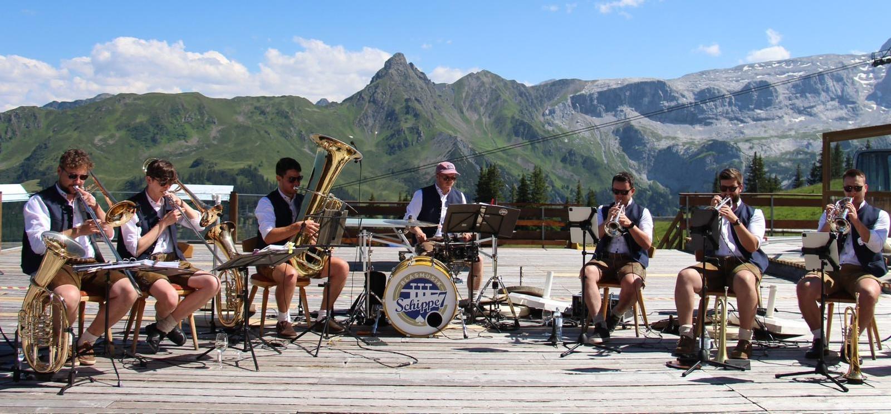

Über uns
Wir - Schippe 7 - sind sieben Amateurmusiker aus drei benachbarten Musikvereinen am Bodensee. Dabei unterhalten wir mit böhmisch-märhischer und moderner Blasmusik. Egal ob im Festzelt, Biergarten oder sonstiges - wir spielen gerne!
